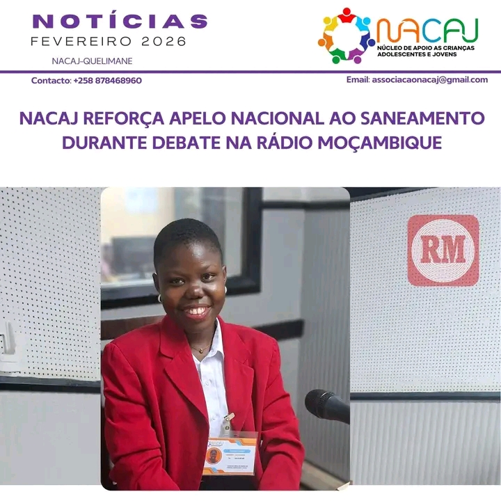
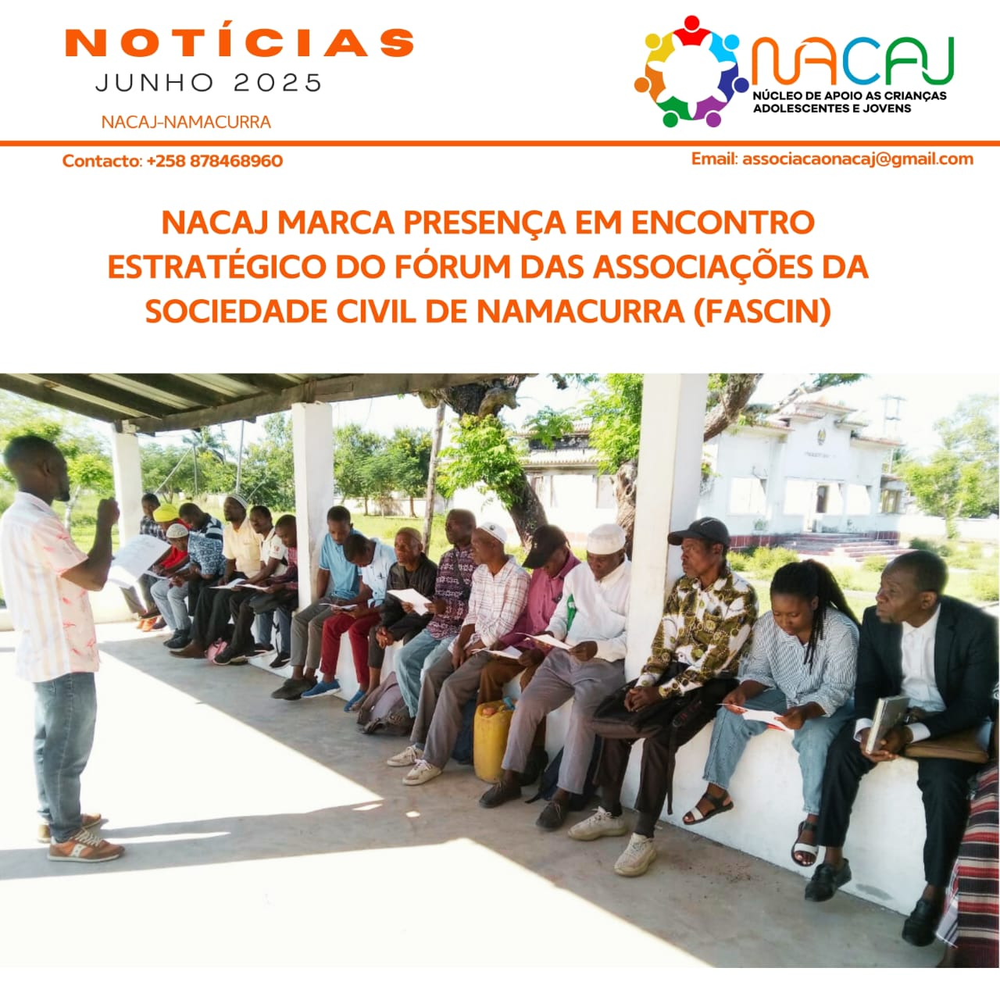
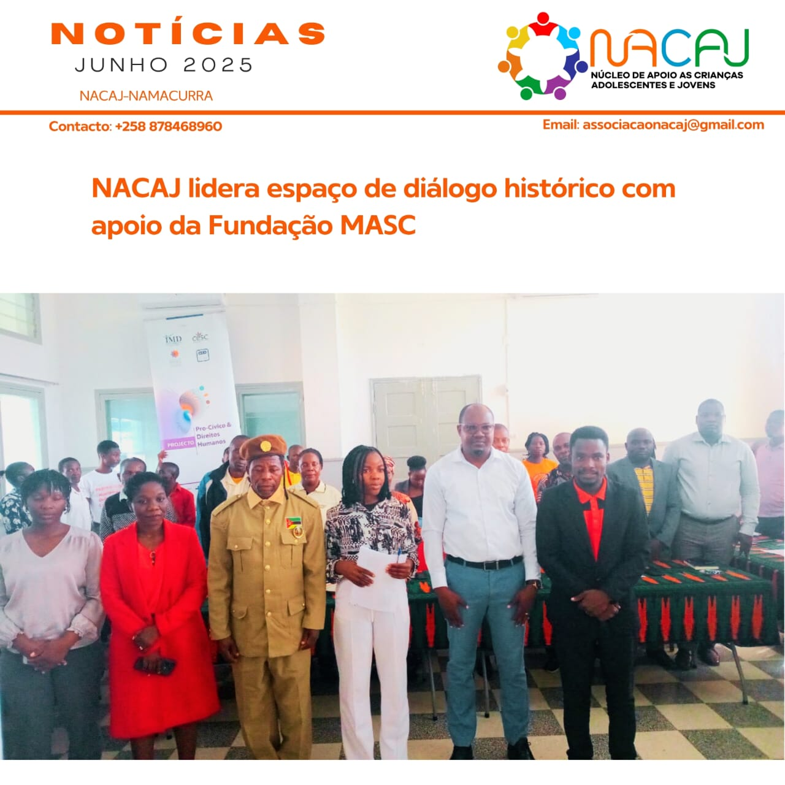
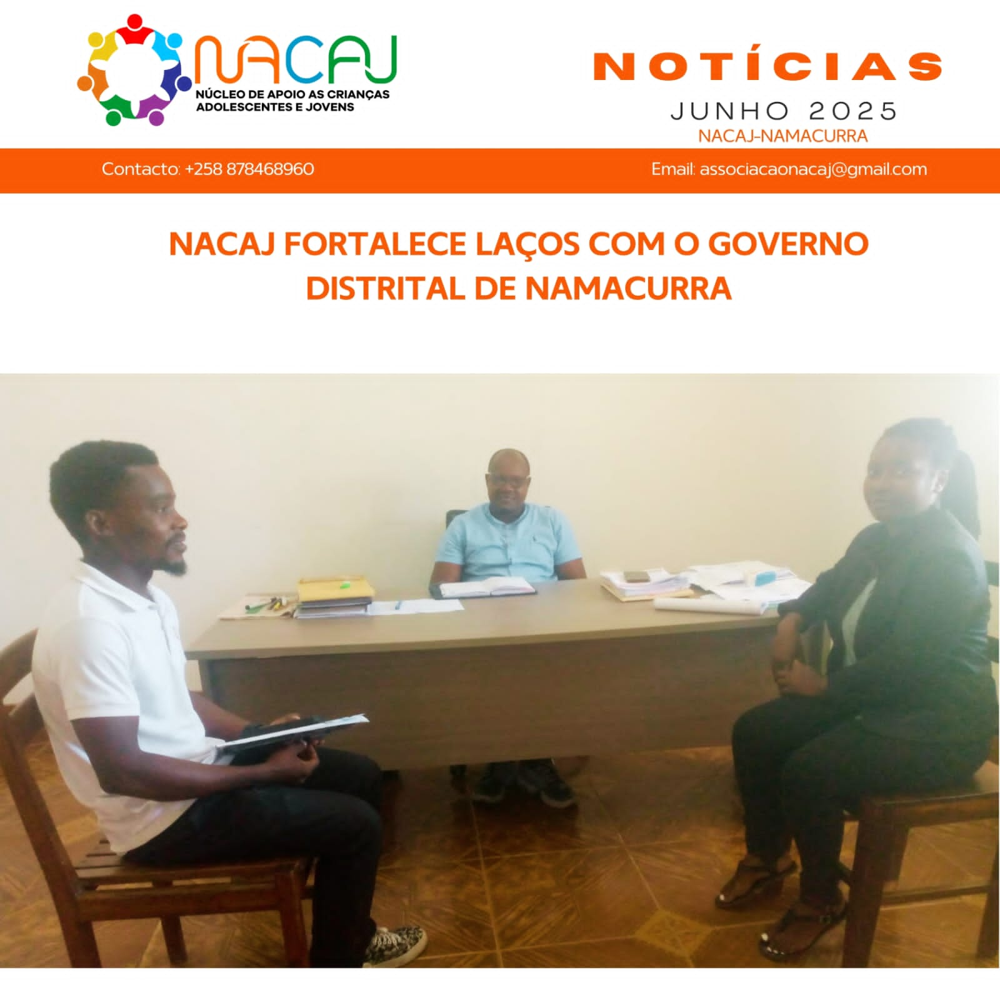
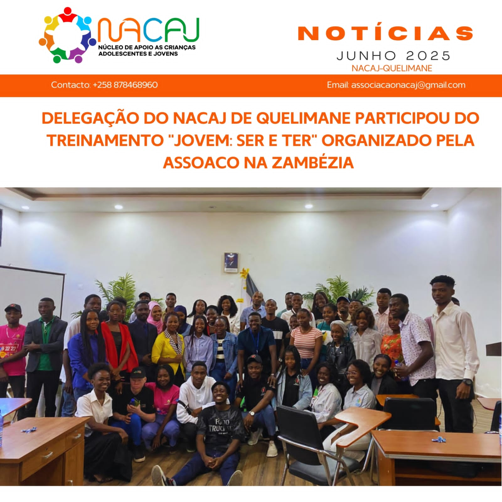

FASCIN RECEBE CARTA DE SUBSÍDIO EM CERIMÓNIA HISTÓRICA EM NAMACURRA
No dia 31 de Julho de 2025, o Fórum das Associações da Sociedade Civil de Namacurra (FASCIN) foi reconhecido a nível nacional com a entrega oficial da Carta de Subsídio de Assistência Técnica e Estratégica, promovida pela Rede MOZCÍVICO e ORPHAD. A cerimónia teve lugar no escritório do NACAJ, numa visita que marcou um momento histórico de diálogo e fortalecimento das organizações da sociedade civil locais.

NACAJ MARCA PRESENÇA NA CARAVANA NACIONAL RUMO À IX CONFERÊNCIA DA JUVENTUDE – PEMBA 2026

NACAJ MARCA PRESENÇA NO LANÇAMENTO DA SEMANA NACIONAL DA JUVENTUDE EM QUELIMANE

NACAJ, 4 ANOS DE IMPACTO, PROPÓSITO E TRANSFORMAÇÃO!

FELIZ DIA MUNDIAL DO AMBIENTE – 05 DE JUNHO

O NACAJ marca presença no 2.º Congresso das Organizações da Sociedade Civil

NACAJ integra oficialmente ao Conselho Provincial da Juventude da Zambézia em Assembleia Geral histórica

NACAJ participa em encontro da Geração Biz em Namacurra para reforçar saúde sexual e reprodutiva dos jovens

Direcção do NACAJ reúne-se com Delegação de Quelimane para reforçar coordenação interna

NACAJ reforça presença em Namacurra com participação activa em Mesa Redonda das OSCs

NACAJ avança com força em Nampula, juventude une-se em encontro estratégico liderado pelo ponto focal

Impacto social em Mocuba, Edil garante apoiar NACAJ após apresentação oficial

NACAJ Marca Presença no Lançamento do Festival Qua-Qua e Reforça Compromisso com Cultura e Sustentabilidade

NACAJ Reforça Compromisso com Cidadania Activa em Seminário sobre Educação Cívica e Inclusão

NACAJ Reforça Apelo Nacional ao Saneamento Durante Debate na Rádio Moçambique

NACAJ Capacita mais 40 Jovens em Retórica e Oratória para Liderança e Transformação Social

NACAJ FORTALECE PARCERIA COM DIRECÇÃO DA EDUCAÇÃO PARA INICIATIVAS NAS ESCOLAS

NACAJ E PARCEIROS CELEBRAM A HISTÓRIA DA CIDADE DE QUELIMANE COM PALESTRA E ACTIVIDADES CULTURAIS

NACAJ e AEUL promovem capacitação sobre liderança e activismo juvenil na Universidade Licungo

NACAJ RECEBE JOVENS DO PROJECTO TECJOVEM PARA FIRMAR PARCERIA EM FORMAÇÃO TÉCNICA

ASSOCIAÇÃO NACAJ PARTICIPA EM SESSÃO EXTRAORDINÁRIA DO CDJ EM NAMACURRA PARA FORTALECIMENTO JUVENIL E POSSE DOS NOVOS MEMBROS EXECUTIVOS

NACAJ MARCA PRESENÇA EM ENCONTRO ESTRATÉGICO DO FÓRUM DAS ASSOCIAÇÕES DA...

COMUNIDADE E GOVERNO SE ENCONTRAM EM NAMACURRA PARA...

NACAJ FORTALECE LAÇOS COM O GOVERNO DISTRITAL DE NAMACURRA...

DELEGAÇÃO DO NACAJ DE QUELIMANE PARTICIPOU DO TREINAMENTO...